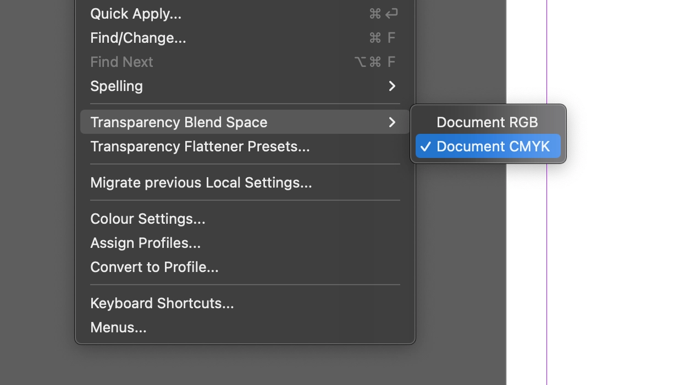
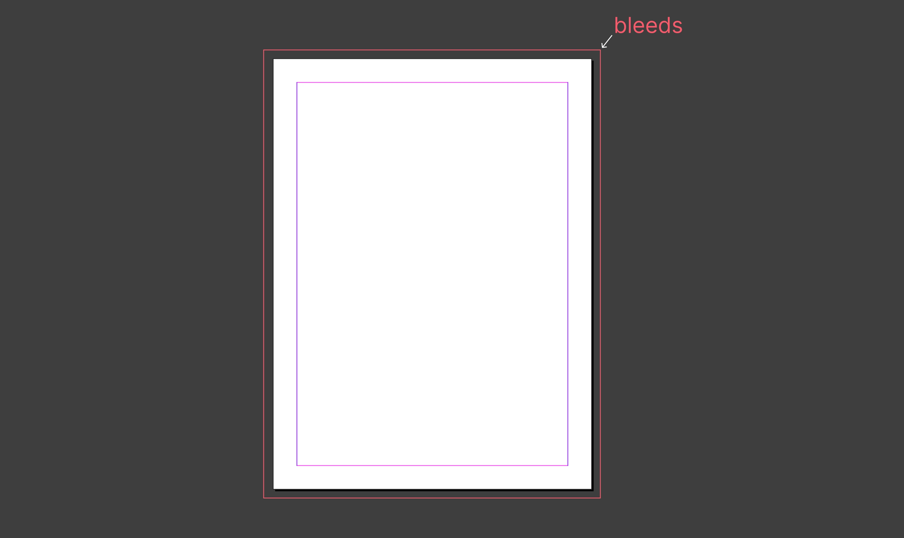
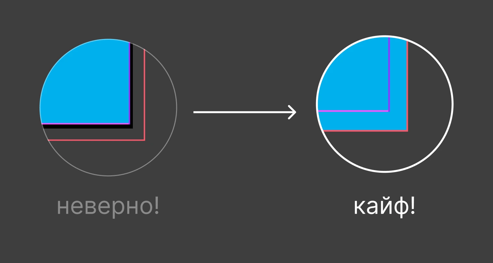
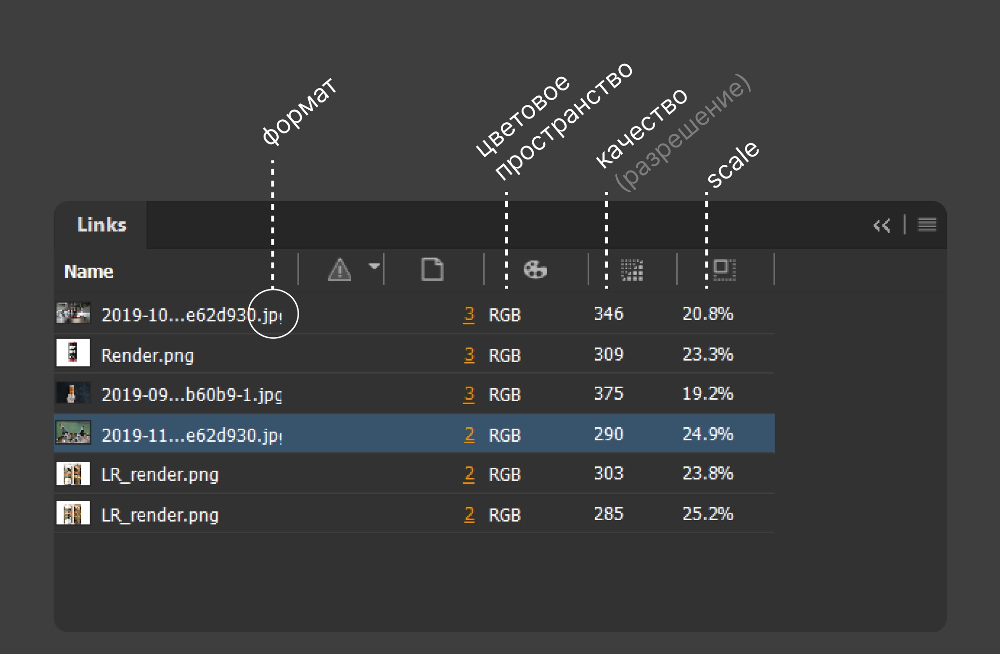
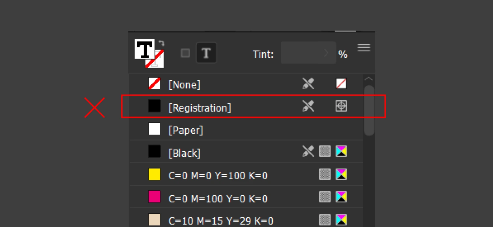
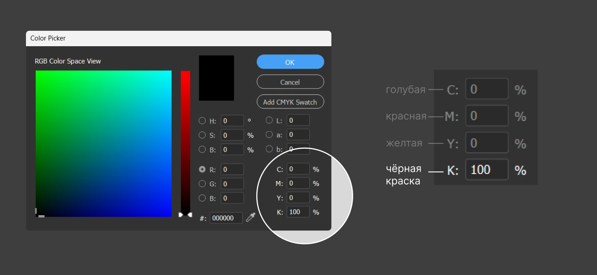
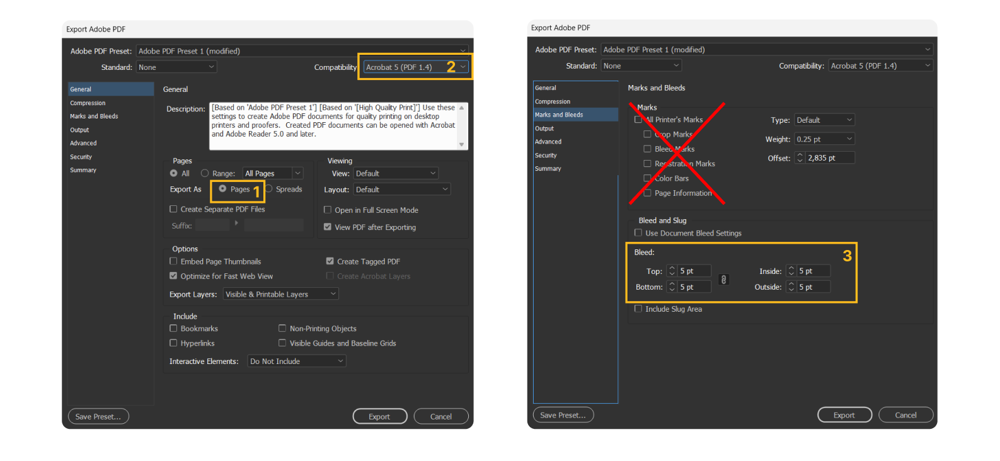

Подготовка к печати
У каждой типографии свои требования, т.к. во всех стоит разное оборудование. Обязательно запроси их до предпечатной подготовки. это убережёт твой макет от ошибок при печати.
Если ты собираешься печатать книгу самостоятельно или являешься студент Школы Дизайна НИУ ВШЭ (и собираешься печатать в препрессе), тебе пригодятся следующие знакния. Все оставшиеся вопросы по печати в школе дизайна можно задать сюда.
Бумага
Советую магазин “Мир бумаги” (Москва, м. Автозаводская), там бумагу обрежут до нужного тебе формата. Советую брать бумагу “перграфика”. Для обычных страниц книги идеальна бумага 120 г/м2, поэтому можно взять бумагу “перграфика” 120 г/м2. Для формата близкого к А5 подойдет идеально.
Ограничения по бумаге для печати в ШД
- Плотность: от 80 до 300 г/м2
- Тип: бумага для цифровой печати
- Покрытие: офсетная/мелованная — это неважно, это становится важным только для тиражной печати
Формат
На листе печатается один разворот. Размер разворота твоей книги должен быть на 10 мм меньше формата листа, на котором он печатается. Таким образом, если твой разворот окажется чуть больше листа А4, печатай на формате А3.
- A3: 297 на 420 мм
- A4: 210 на 297 мм
- SRA3: 320 на 450 мм
Чек-лист
Всё в CMYK. При создании файла индиз автоматически назначает всему файлу цветовой режим CMYK. Если что-то пошло не так и у вас RGB, сменить профиль на CMYK можно во всём документе, НО это не повлияет на цветовой режим фоток и файлов.

←
1
Edit → Transparency Blend Space → Document CMYK
Количество страниц в твердом переплете кратно 4-м! Если ты делаешь книгу с мягким переплетом и в ней странцы склеиваются (без прошивки), только в этом случае количество страниц будет кратно 2-м. Книга может состоять из 60, 64, 68 (…) 120, 124 страниц и т.д. Но не из 125! Такова анатомия книги. Обрати внимание, что обложка / форзац не считаются за страницы. Страницы — это только те листы, которые собирают в книжный блок.
Структура книги. Должны быть 2 одиночные страницы: в начале и конце. Нельзя удалять первую и последнюю страницы, хоть они и не образуют разворот. Книжный блок начинается с одиночной белой страницы. Возьми любую книгу и посмотри на её конструкцию: блок с основными страницами начинается с одинарной белой страницы. Кроме того, первая страница не должна быть обложкой. В твердых переплетах обложка отправляется в типографию отдельным макетом.

←
2
Структура книги в InDesign
Bleeds (вылеты)= 5 мм. Все принтеры печатают страницы со смещением. Поэтому на всякий случай развороты печатают с прибавками, которые позже обрезаются. Все фотки и объекты, которые касаются края страницы в макете могут некрасиво сдвинуться при печати. Поэтому мы закладываем выпуски под обрез (bleeds) и заводим картинки за края страницы, до линии bleeds. В разных типографиях и для разных форматов размер bleeds варьируется от 3 до 5 мм.

←
3
Bleeds
Вылеты под обрез
Как настроить bleeds. File → Document Setup, далее напротив “Bleed” ставим значение 5 мм со всех сторон!
Дотянуть все объекты до линии bleeds. Все фото, плашки, которые прижимаются к границе страницы. При печати у вас может появиться белая полоса на краю, т.к. большинство книг печатаются и обрезаются с погрешностью 1-5 мм. Если это не задумано по дизайну, все, что прижимается к границе страницы, необходимо растянуть до красной линии bleeds.

←
4
Не забывай дотягивать объекты до линии bleeds
Картинки
Для проверки изображений нам важны всего 3 вещи: качество изображений, цветовой режим (CMYK) и формат (PSD, PNG и т.д.). Для этого открой панель “Links” в Indesign.

←
5
панель “Links” в Indesign
Если у тебя панель выглядит по-другому. Тебе нужно настроить её под себя. Для этого зайди в Panel Options и поставь галочки около status, page, color space effective PPI и scale.

←
6
Настройка панели “Links”
Формат изображения
- TIF и TIFF — идеально
- JPEG — можно, но падает качество
- PSD — это формат фотошоп-файла
- PNG — запрещён!
Цветовое пространство
- CMYK
- Grey (градация серого)
- RGB — запрещён!
Разрешение
- от 250 до 350
Цвет
Ни в коем случае не используй цвет Registration при печати, он берет и смешивает все 4 цвета в 100% объеме. Cуммарное количество краски превышает допустимое. Из-за этого краска может не впитаться в бумагу, склеивать соседние листы.

←
7
Цвет Registration не используют в печати
В полиграфии черный цвет печатают двумя способами: либо одной чёрной краской (она называется Key), либо смешивают все 4 краски в разных пропорциях. Второй способ делает чёрный более ярким и насыщенным и его используют для плашек, заливок, но не подходит для текста и мелких деталей. Для остальных цветов действует правило – чем меньше красок смешивается, тем чище цвет. Можно получить один и тот же оттенок, смешивая 2 краски, а не 4.

←
8
Для текста и тонких линий

←
9
Для заливок, фона, жирных больших заголовков
Все градиенты обязательно нужно растрировать и накладывать шум, иначе при печати он будет полосить.

←
10
Подготовка градиента перед печатью
Экспорт
- Необходимо перевести все линии и текст в кривые. Это удобнее всего делать через автоматическую программу, которую можно создать за 10 минут по этому видео.
- Воспользоваться окном ”Preflight Panel”. В этом окне находятся все ошибки, которые программа нашла: от неправильного цветового режима фотографии до вытесненного текста.
- Пробежаться взглядом по всем макету, включив панель ”Separations Preview”. Это режим просмотра по каналам (Cyan, Magenta, Yellow, Key). Важно посмотреть, чтобы при ВЫКЛючении канала “Key” пропадал весь текст и все маленькие линии. Это будет значить, что для них выбран правильный черный цвет – печать в одну краску.
Настройки экспорта
Для препресса в Школе Дизайна экспортировать постранично (не разворотами). Если есть прозрачные и полупрозранчые элементы, выбирай версию pdf 1.3-1.4. Проверь наличие вылетов под обрез (Bleed). Не ставь кроп-марки (Marks), если не печатаешь сам. Их выставляют в типографии!

←
11
Настройка панели экспорта
Фух! Теперь ты точно готов к печати! Самое ответственное и непонятное осталось позади. На этом наша работа над книгой заканчивается. Если ты печатаешь тираж книги, то хорошим тоном перед отправкой макета на печать будет запросить цветопробу для одного из разворотов. Это поможет убедиться, что цвета в печати будут такими же, как в макете. Если тебе понравилось делать книжки, приглашаю тебя в тг-канал, где я планирую регулярно делать обзоры на красивые книжки и освещать еще более узкие темы по книжному дизайну.